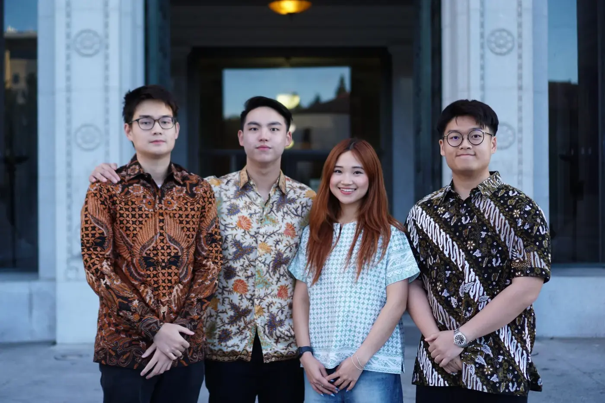
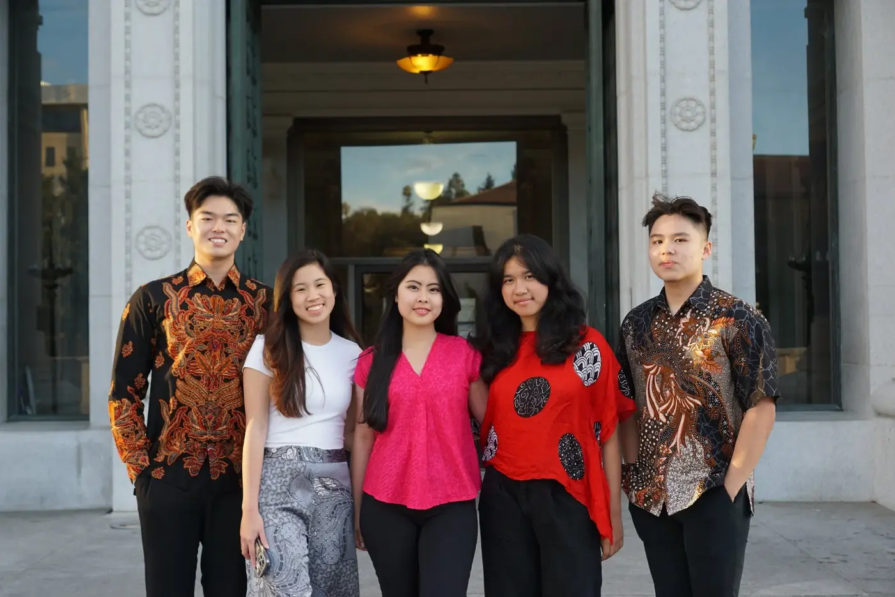

PengurusBISA’s team
Run by students
who wear batik well.
Officers are selected through an election near the end of every Spring Semester by members of BISA. Candidates submit an application, interview, and deliver a speech on election night.


Seven departments